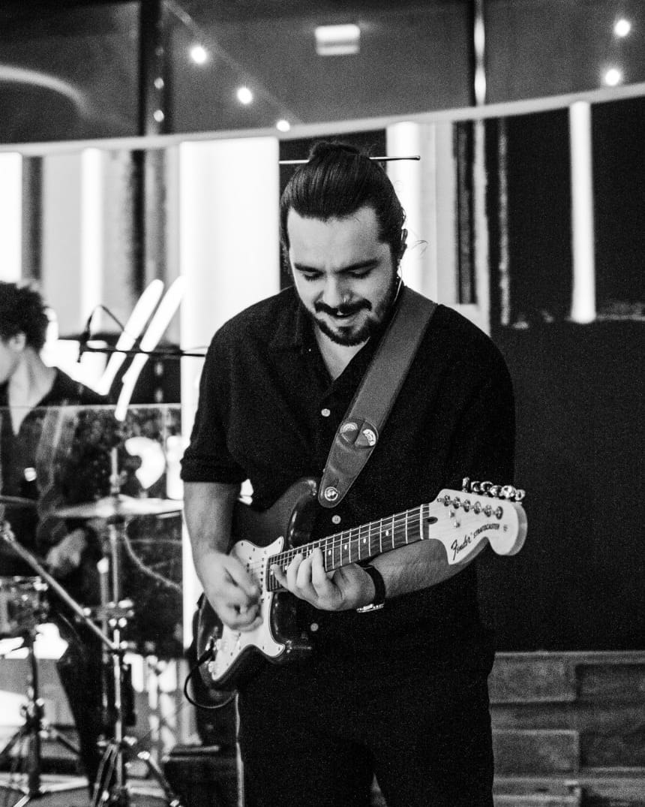
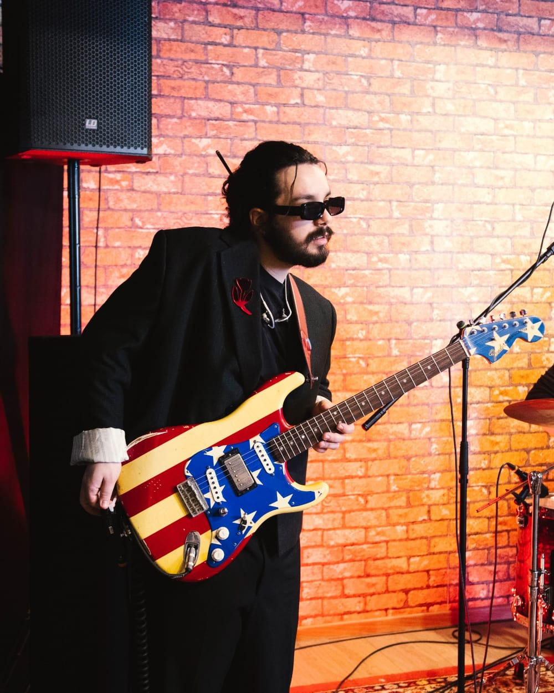

Totul prin piese
Îmi zici ce piesă vrei să cânți și de acolo pornim. Teoria o scoatem din piesă, când chiar ai nevoie de ea.
Lecții fizice · București, Sector 2
Salut, sunt Sorin, noul tău prof de chitară.


Până la chitară am experimentat cu tot felul de meserii creative.
Îmi zici ce piesă vrei să cânți și de acolo pornim. Teoria o scoatem din piesă, când chiar ai nevoie de ea.
Vorbim puțin și cântăm mult. Cam asta e toată filozofia.
Nu contează cât de repede înveți. Am răbdare cât cuprinde, iar scopul meu e să facem treabă bună, nu treabă rapidă.
La lecții se râde mult. E un safe space în care nu te judecă nimeni, așa că poți greși liniștit.
17 recenzii pe Google Maps, toate de 5 stele. Și nu, niciuna nu e de la mama.
„Cel mai puternic profesor de chitară din București. Și are și părul foarte frumos.”
„Fun times! Sorin m-a ajutat foarte mult cu teoria, ceea ce aveam nevoie când am decis să merg la el. Am mers aproape un an. Recomand 100%!”
„Sorin este un om foarte pasionat de ceea ce face, iar acest lucru se reflectă în lecțiile sale. În 3 luni mi-a dezvoltat bagajul de cunoștințe și mi-a oferit lansarea de care aveam nevoie. Trei cuvinte care l-ar descrie ar fi: pasionat, prietenos, înțelegător.”
„Am venit la lecții fără niciun fel de experiență, iar Sorin m-a luat de la 0 și m-a ajutat să progresez. De asemenea, s-a adaptat după gusturile mele muzicale și ce îmi doresc să aprofundez la instrument. Lecții plăcute cu vibe super. Recomand cu căldură!!!”
„Sorin este un profesor excelent de chitară, dar și un om care reușește să creeze rapid o conexiune autentică cu elevii lui. Fiul meu (12 ani) a prins drag de chitară foarte repede și abia așteaptă fiecare oră. A început să lase telefonul deoparte și, în loc să se joace, exersează riff-uri, scale și improvizații. […] Recomand cu toată încrederea!”
Chestii pe care le tot explic la lecții, acum puse și în scris.
Cât să dai pe ea, la ce să te uiți în magazin și ce mai iei odată cu ea.
De ce recomand electricele junior și ce mărime îi trebuie.
Chitară, accesorii și lecții, puse cap la cap.
Nu este necesar. În studio există chitare pe care le poți folosi la lecții, așa că poți începe și fără un instrument propriu. Dacă vrei să-ți cumperi unul, te pot ajuta să alegi un model potrivit nivelului și bugetului tău.
Lecțiile sunt potrivite pentru copii de la 5 ani în sus. Pentru cei mici, ritmul și materialele sunt adaptate vârstei, iar lucrul se face pe piese pe care le cunosc deja.
Nu sunt necesare cunoștințe anterioare. Lecțiile pornesc direct de la piese, iar noțiunile de teorie muzicală sunt introduse treptat, pe măsură ce devin utile.
O lecție durează 60 de minute. Majoritatea elevilor vin o dată pe săptămână, însă frecvența se stabilește în funcție de disponibilitatea și obiectivele fiecăruia.
Lecțiile au loc fizic, în studioul de pe Strada Matei Voievod nr. 114, Sector 2, București. Programul este flexibil și include și weekendul.
Dă-mi un telefon sau scrie-mi pe WhatsApp și vedem când te bagi la prima lecție.